ภาพรวมบทนี้ main memory เร็วแต่ไฟดับแล้วข้อมูลหาย และจุได้ไม่มาก เราจึงต้องมี external memory ไว้เก็บข้อมูลถาวร บทนี้ไล่ดูทีละแบบ:
- Magnetic disk: หลักการอ่านเขียน, การจัดข้อมูล, ชนิดของ disk, ค่าประสิทธิภาพ
- RAID 0–6: การรวม disk หลายลูกให้ทำงานเป็นลูกเดียว
- SSD: เทียบกับ HDD และปัญหาในการใช้งานจริง
- Optical memory: CD, DVD, Blu-ray
- Magnetic tape
บทนี้ต่อจาก Chapter 04 (memory hierarchy, flash, disk access) และ Chapter 05 (I/O)
1. Course Outline
- บทนี้คือหัวข้อ storage systems ของวิชา (ต่อจาก input and output systems และก่อน computing units)
- หัวข้อย่อยของบท:
- Magnetic Disk
- RAID
- SSD
- Practical Issues
- Optical Memory
2. Magnetic Disk
- disk คือจานกลม (platter) ทำจากวัสดุที่ไม่เป็นแม่เหล็ก เรียกว่า substrate แล้วเคลือบด้วย วัสดุที่ทำให้เป็นแม่เหล็กได้
- เดิม substrate ทำจาก อะลูมิเนียม หรือโลหะผสมอะลูมิเนียม
- ช่วงหลังเริ่มใช้ substrate แบบแก้ว (glass)
- ข้อดีของ glass substrate:
- ผิวฟิล์มแม่เหล็กสม่ำเสมอขึ้น → disk เชื่อถือได้มากขึ้น
- ตำหนิบนผิวลดลงมาก → อ่านเขียนผิดพลาดน้อยลง
- รองรับ fly height ต่ำลง (หัวอ่านบินใกล้จานได้มากขึ้น)
- แข็งแรงกว่า → ลดการสั่นไหวของ disk
- ทนแรงกระแทกและความเสียหายได้ดีกว่า
3. Read / Write Process
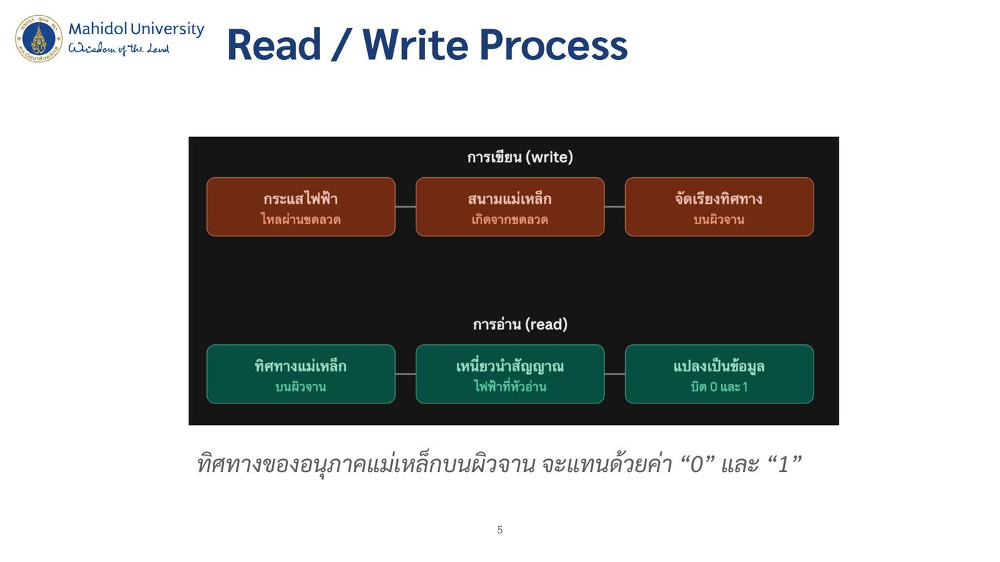
การเขียน (write)
- กระแสไฟฟ้า ไหลผ่านขดลวด
- เกิด สนามแม่เหล็ก จากขดลวด
- จัดเรียงทิศทาง อนุภาคแม่เหล็กบนผิวจาน
การอ่าน (read)
- อ่าน ทิศทางแม่เหล็ก บนผิวจาน
- ทิศทางนั้น เหนี่ยวนำสัญญาณไฟฟ้า ที่หัวอ่าน
- แปลงเป็นข้อมูล บิต 0 และ 1
- สไลด์สรุปว่า ทิศทางของอนุภาคแม่เหล็กบนผิวจานใช้แทนค่า "0" และ "1"
Figure 6.1 — Inductive Write / Magnetoresistive Read Head
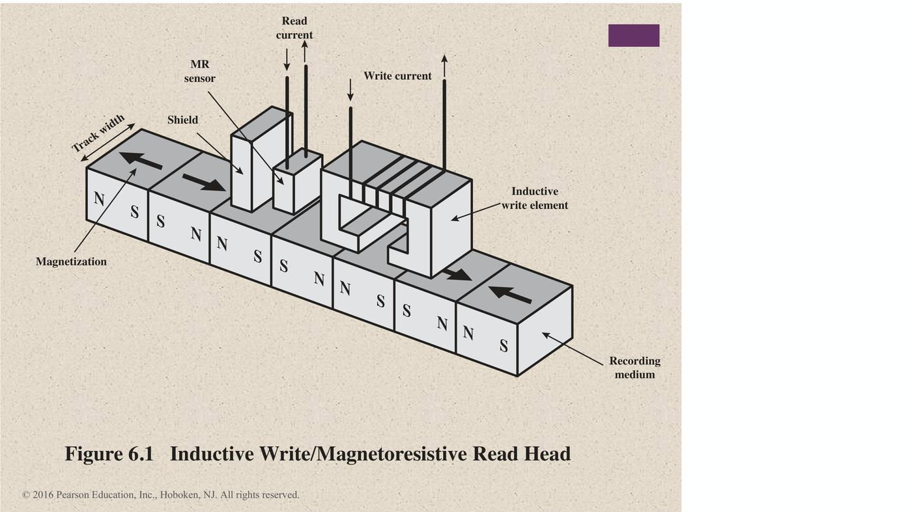
- Inductive write element: ใช้ Write current สร้างสนามแม่เหล็กเพื่อเขียน
- MR (magnetoresistive) sensor: ใช้ Read current อ่านค่า
- ค่าความต้านทานของ sensor เปลี่ยนตามทิศทางแม่เหล็ก (เสริม)
- Shield กั้นระหว่างหัวเขียนกับหัวอ่าน
- บน Recording medium มีบริเวณ Magnetization เรียงเป็น N–S กว้างเท่า Track width
4. Data Organization and Formatting
4.1 Figure 6.2 — Disk Data Layout
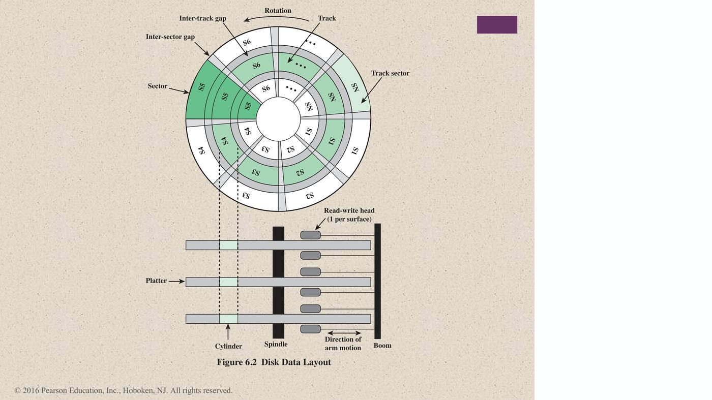
| ส่วน | ความหมาย |
|---|---|
| Platter | จานแต่ละแผ่น หมุนรอบ Spindle |
| Track | วงกลมซ้อนกันบนผิวจาน |
| Sector | ส่วนย่อยของ track (S1, S2, …, SN) |
| Inter-track gap | ช่องว่างระหว่าง track |
| Inter-sector gap | ช่องว่างระหว่าง sector |
| Cylinder | track ตำแหน่งเดียวกันของทุก platter |
| Read-write head | 1 หัวต่อ 1 ผิวจาน ติดกับ Boom ที่เคลื่อนตาม Direction of arm motion |
💡 gap มีไว้กันไม่ให้สนามแม่เหล็กของข้อมูลที่อยู่ติดกันรบกวนกัน (เสริม)
4.2 Figure 6.3 — Comparison of Disk Layout Methods
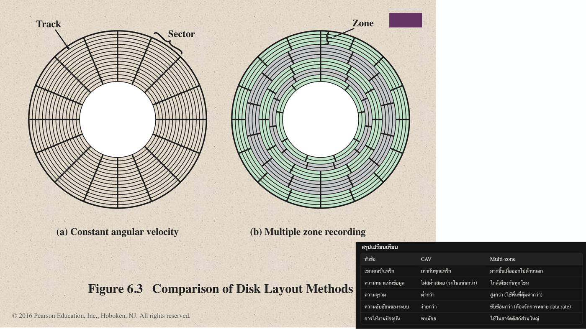
| วิธี | ลักษณะ | ข้อดี / ข้อเสีย (เสริม) |
|---|---|---|
| (a) Constant angular velocity (CAV) | ทุก track มีจำนวน sector เท่ากัน sector ด้านนอกจึงกว้างกว่าด้านใน | ควบคุมง่าย แต่ track ด้านนอกเก็บข้อมูลได้ไม่เต็มที่ |
| (b) Multiple zone recording | แบ่งจานเป็น zone โดย zone ด้านนอกมี sector มากกว่า | จุข้อมูลได้มากขึ้น แต่วงจรซับซ้อนขึ้น |
4.3 Winchester Disk Format (Seagate ST506)
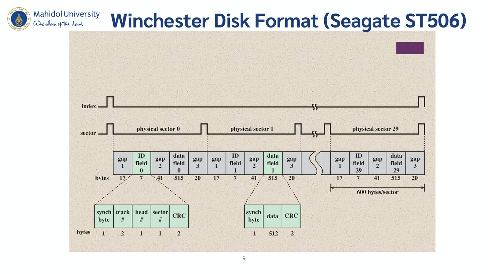
- สัญญาณ index บอกจุดเริ่มต้นของ track
- สัญญาณ sector บอกจุดเริ่มต้นของแต่ละ sector
- track หนึ่งมี 30 physical sectors (sector 0 ถึง 29)
โครงสร้างของ 1 sector = 600 bytes/sector
| ส่วน | gap 1 | ID field | gap 2 | data field | gap 3 |
|---|---|---|---|---|---|
| bytes | 17 | 7 | 41 | 515 | 20 |
ข้างใน ID field (7 bytes)
| ส่วน | synch byte | track # | head # | sector # | CRC |
|---|---|---|---|---|---|
| bytes | 1 | 2 | 1 | 1 | 2 |
ข้างใน data field (515 bytes)
| ส่วน | synch byte | data | CRC |
|---|---|---|---|
| bytes | 1 | 512 | 2 |
💡 ลองบวกเช็ก: 17 + 7 + 41 + 515 + 20 = 600 — ข้อมูลจริงมีแค่ 512 bytes ส่วนที่เหลือเป็น gap, ID และ CRC
5. Physical Characteristics
5.1 Table 6.1 — Physical Characteristics of Disk Systems ⭐
| หัวข้อ | ตัวเลือก |
|---|---|
| Head Motion | Fixed head (one per track), Movable head (one per surface) |
| Disk Portability | Nonremovable disk, Removable disk |
| Sides | Single sided, Double sided |
| Platters | Single platter, Multiple platter |
| Head Mechanism | Contact (floppy), Fixed gap, Aerodynamic gap (Winchester) |
5.2 Characteristics
| ชนิด | รายละเอียด |
|---|---|
| Fixed-head disk | มีหัวอ่านเขียน 1 หัวต่อ 1 track หัวทั้งหมดติดบนแขนแข็งที่ยื่นคร่อมทุก track |
| Movable-head disk | มีหัวอ่านเขียนหัวเดียว ติดบนแขนที่ ยืดเข้าออกได้ |
| Non-removable disk | ติดตายอยู่ใน drive เช่น hard disk ใน PC |
| Removable disk | ถอดเปลี่ยนเป็นแผ่นอื่นได้ |
| Double sided disk | เคลือบสารแม่เหล็กทั้งสองด้าน ของ platter |
- ข้อดีของ removable disk:
- มีที่เก็บข้อมูลได้ไม่จำกัด โดยใช้ disk system จำนวนจำกัด
- ย้าย disk ไปใช้กับคอมพิวเตอร์เครื่องอื่นได้
- ตัวอย่าง: floppy disk และ ZIP cartridge disk
5.3 Disk Classification ตาม Head Mechanism
แบ่ง disk ตามกลไกของหัวอ่านได้ 3 แบบ: contact, fixed gap, aerodynamic gap
- หัวต้องสร้างหรือรับสนามแม่เหล็กที่แรงพอ จึงจะอ่านเขียนได้ถูกต้อง
- หัวยิ่งแคบ ยิ่งต้องอยู่ใกล้ผิวจาน
- หัวแคบ → track แคบ → ความหนาแน่นข้อมูลสูงขึ้น
- แต่หัวยิ่งใกล้จาน → เสี่ยงผิดพลาดจากฝุ่นหรือตำหนิมากขึ้น
Winchester Heads
- ใช้ใน drive ที่ปิดผนึก เกือบไม่มีสิ่งปนเปื้อน
- ออกแบบให้ ทำงานใกล้ผิวจานกว่าหัวของ rigid disk ทั่วไป → ความหนาแน่นข้อมูลสูงขึ้น
- ตัวหัวเป็น aerodynamic foil
- ตอนจานหยุด หัวจะวางเบา ๆ บนผิวจาน
- ตอนจานหมุน แรงดันอากาศจะยกหัวให้ลอยขึ้นเหนือผิว
💡 คล้ายปีกเครื่องบิน: พอจานหมุนเร็ว อากาศจะยกหัวให้ลอยในระยะที่ใกล้มากแต่ไม่แตะจาน (เสริม)
5.4 Table 6.2 — Typical Hard Disk Drive Parameters
| Characteristics | Seagate Enterprise | Seagate Barracuda XT | Seagate Cheetah NS | Seagate Laptop HDD |
|---|---|---|---|---|
| Application | Enterprise | Desktop | Network attached storage, application servers | Laptop |
| Capacity | 6 TB | 3 TB | 600 GB | 2 TB |
| Average seek time | 4.16 ms | N/A | 3.9 ms read, 4.2 ms write | 13 ms |
| Spindle speed | 7200 rpm | 7200 rpm | 10,075 rpm | 5400 rpm |
| Average latency | 4.16 ms | 4.16 ms | 2.98 | 5.6 ms |
| Maximum sustained transfer rate | 216 MB/s | 149 MB/s | 97 MB/s | 300 MB/s |
| Bytes per sector | 512/4096 | 512 | 512 | 4096 |
| Tracks per cylinder (number of platter surfaces) | 8 | 10 | 8 | 4 |
| Cache | 128 MB | 64 MB | 16 MB | 8 MB |
💡 7200 rpm → average latency 4.16 ms: หมุน 1 รอบใช้ 60/7200 วินาที = 8.33 ms ค่าเฉลี่ยคือรอครึ่งรอบ = 4.16 ms (วิธีคิดเดียวกับ Chapter 04) (เสริม)
6. Disk Performance Parameters ⭐⭐
6.1 Figure 6.5 — Timing of a Disk I/O Transfer
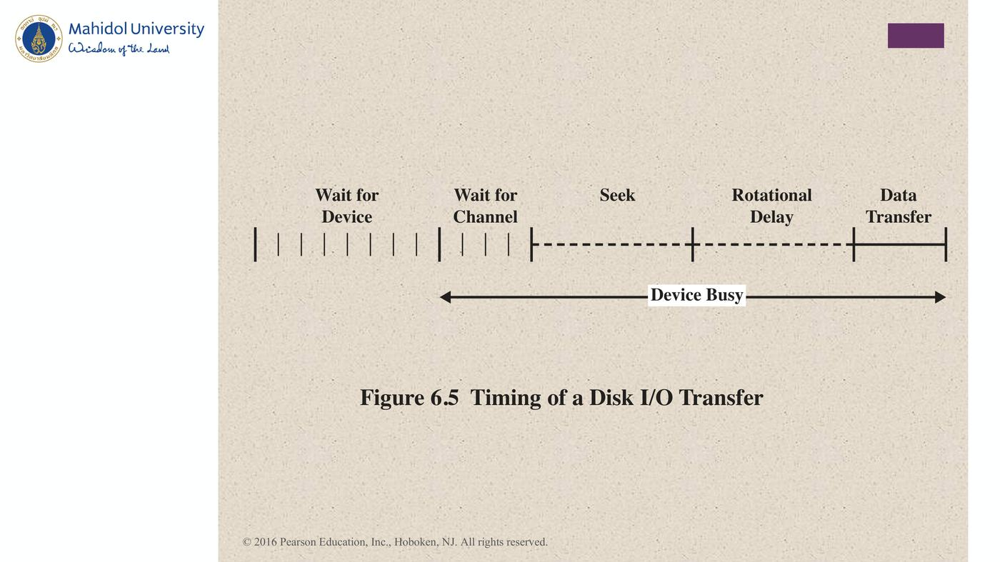
ลำดับเวลา:
- Wait for Device
- Wait for Channel
- Seek
- Rotational Delay
- Data Transfer
- ช่วง Seek → Rotational Delay → Data Transfer คือช่วง Device Busy
6.2 นิยามค่าต่าง ๆ
- ตอน drive ทำงาน จานหมุนด้วยความเร็วคงที่
- จะอ่านหรือเขียนได้ หัวต้องอยู่ที่ track ที่ต้องการ และตรงจุดเริ่มของ sector ที่ต้องการ
- การเลือก track:
- ระบบ movable-head ต้อง เลื่อนหัว
- ระบบ fixed-head ใช้ เลือกหัวทางอิเล็กทรอนิกส์
- พอได้ track แล้ว controller จะ รอให้ sector ที่ต้องการหมุนมาตรงหัว
- การเลือก track:
| ค่า | ความหมาย |
|---|---|
| Seek time | (ระบบ movable-head) เวลาที่ใช้เลื่อนหัวไปยัง track |
| Rotational delay (rotational latency) | เวลาที่รอให้จุดเริ่มของ sector หมุนมาถึงหัว |
| Access time | Seek time + Rotational delay = เวลาที่ใช้จนหัวพร้อมอ่านหรือเขียน |
| Transfer time | เมื่อหัวเข้าที่แล้ว ก็อ่านหรือเขียนขณะที่ sector เคลื่อนผ่านหัว = ช่วงโอนข้อมูลจริง |
⚠️ Access time ไม่รวม transfer time — access time = seek + rotational delay เท่านั้น
7. RAID ⭐
RAID = Redundant Array of Independent Disks
- สไลด์อธิบายว่าเป็น เทคนิคนำ HD หลายตัวมารวมกันให้ทำงานเป็นกลุ่มเดียว
- มี 7 levels (0–6)
- ⚠️ level ไม่ได้บอกว่าอันไหนดีกว่า เป็นแค่สถาปัตยกรรมที่ต่างกัน
- ทุก level มี ลักษณะร่วม 3 ข้อ:
- OS มองเห็น disk จริงหลายลูกเป็น logical drive ลูกเดียว
- ข้อมูลถูกกระจายไปบน disk จริงหลายลูก ด้วยวิธีที่เรียกว่า striping
- ใช้พื้นที่ส่วนเกิน (redundant) เก็บ parity เพื่อ กู้ข้อมูลได้เมื่อ disk เสีย
⚠️ ข้อ 3 ไม่เป็นจริงกับ RAID 0 เพราะ RAID 0 ไม่มี redundancy และ RAID 1 ใช้การทำสำเนาแทน parity (ตำราระบุไว้เช่นกัน)
7.1 Table 6.3 — RAID Levels ⭐⭐
N = จำนวน data disks, m ∝ log N
| Category | Level | Description | Disks Required | Data Availability | Large I/O Data Transfer Capacity | Small I/O Request Rate |
|---|---|---|---|---|---|---|
| Striping | 0 | Nonredundant | N | ต่ำกว่า disk เดี่ยว | Very high | Very high for both read and write |
| Mirroring | 1 | Mirrored | 2N | สูงกว่า RAID 2, 3, 4, 5 แต่ต่ำกว่า RAID 6 | อ่านเร็วกว่า disk เดี่ยว เขียนใกล้เคียง disk เดี่ยว | อ่านได้ถึง 2 เท่าของ disk เดี่ยว เขียนใกล้เคียง disk เดี่ยว |
| Parallel access | 2 | Redundant via Hamming code | N + m | สูงกว่า disk เดี่ยวมาก ใกล้เคียง RAID 3, 4, 5 | สูงที่สุดในทุกแบบ | ประมาณ 2 เท่าของ disk เดี่ยว |
| Parallel access | 3 | Bit-interleaved parity | N + 1 | สูงกว่า disk เดี่ยวมาก ใกล้เคียง RAID 2, 4, 5 | สูงที่สุดในทุกแบบ | ประมาณ 2 เท่าของ disk เดี่ยว |
| Independent access | 4 | Block-interleaved parity | N + 1 | สูงกว่า disk เดี่ยวมาก ใกล้เคียง RAID 2, 3, 5 | อ่านใกล้เคียง RAID 0 เขียนต่ำกว่า disk เดี่ยวมาก | อ่านใกล้เคียง RAID 0 เขียนต่ำกว่า disk เดี่ยวมาก |
| Independent access | 5 | Block-interleaved distributed parity | N + 1 | สูงกว่า disk เดี่ยวมาก ใกล้เคียง RAID 2, 3, 4 | อ่านใกล้เคียง RAID 0 เขียนต่ำกว่า disk เดี่ยว | อ่านใกล้เคียง RAID 0 เขียนโดยทั่วไปต่ำกว่า disk เดี่ยว |
| Independent access | 6 | Block-interleaved dual distributed parity | N + 2 | สูงที่สุดในทุกแบบ | อ่านใกล้เคียง RAID 0 เขียนต่ำกว่า RAID 5 | อ่านใกล้เคียง RAID 0 เขียนต่ำกว่า RAID 5 มาก |
โน้ตภาษาไทยในสไลด์:
- Striping: แบ่งข้อมูลเป็นชิ้นเล็ก ๆ แล้วกระจายเขียนลงหลายดิสก์พร้อมกัน
- Mirroring: เขียนข้อมูลชุดเดียวกันซ้ำลงดิสก์สองตัว → ปลอดภัยแต่เปลือง
- Parity: คำนวณค่าตรวจสอบ (parity bit) เก็บแยกไว้ ใช้กู้ข้อมูลเมื่อดิสก์ตัวใดตัวหนึ่งเสีย โดยไม่ต้องสำรองข้อมูลเต็มรูปแบบ
7.2 Figure 6.6 — RAID Levels (ภาพ)
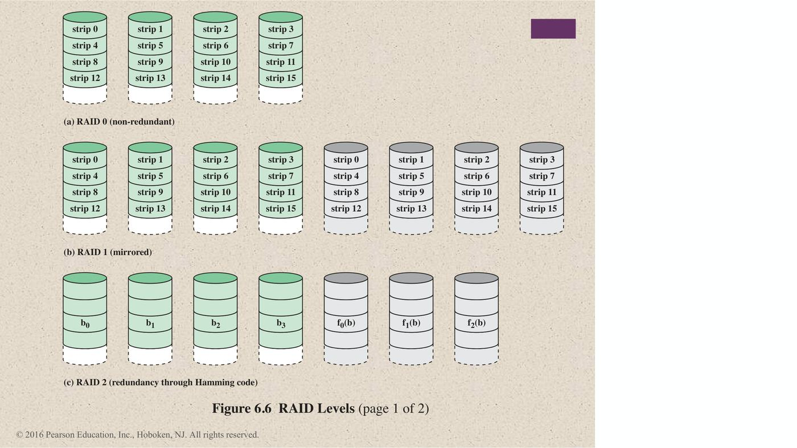
- (a) RAID 0 (non-redundant): strip 0–15 กระจายไป 4 disk (disk แรกมี strip 0, 4, 8, 12 …)
- (b) RAID 1 (mirrored): เหมือน RAID 0 แต่มี อีก 4 disk ที่เป็นสำเนา
- (c) RAID 2 (redundancy through Hamming code): data disks b0–b3 + disk ของ Hamming code f0(b), f1(b), f2(b)
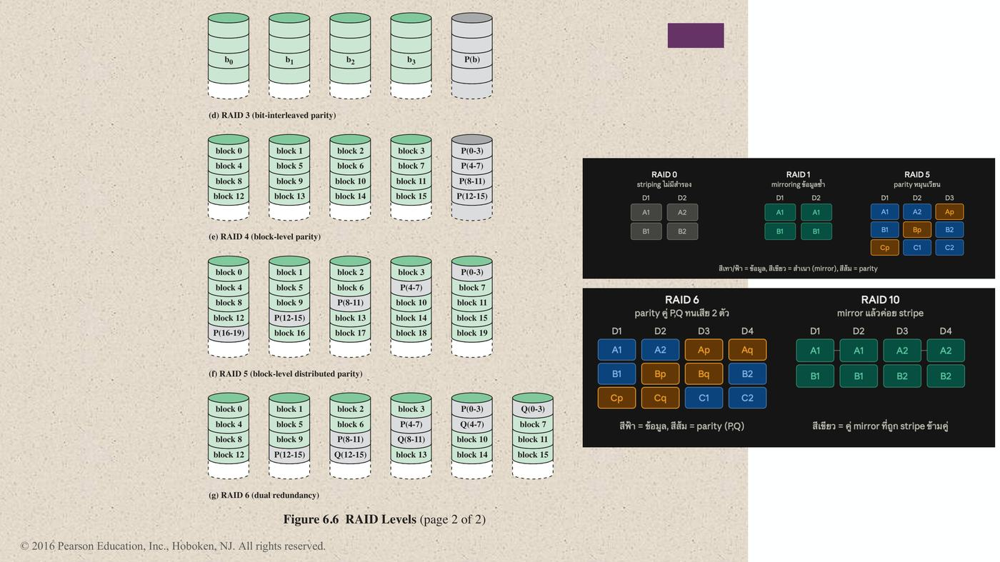
- (d) RAID 3 (bit-interleaved parity): b0–b3 + P(b) disk เดียว
- (e) RAID 4 (block-level parity): block 0–15 + parity disk แยก 1 ลูก (P(0-3), P(4-7), …)
- (f) RAID 5 (block-level distributed parity): parity หมุนเวียนไปอยู่คนละ disk ในแต่ละแถว
- (g) RAID 6 (dual redundancy): มีทั้ง P และ Q กระจายอยู่คนละ disk
8. RAID Level 0–6
8.1 Figure 6.7 — Data Mapping for a RAID Level 0 Array
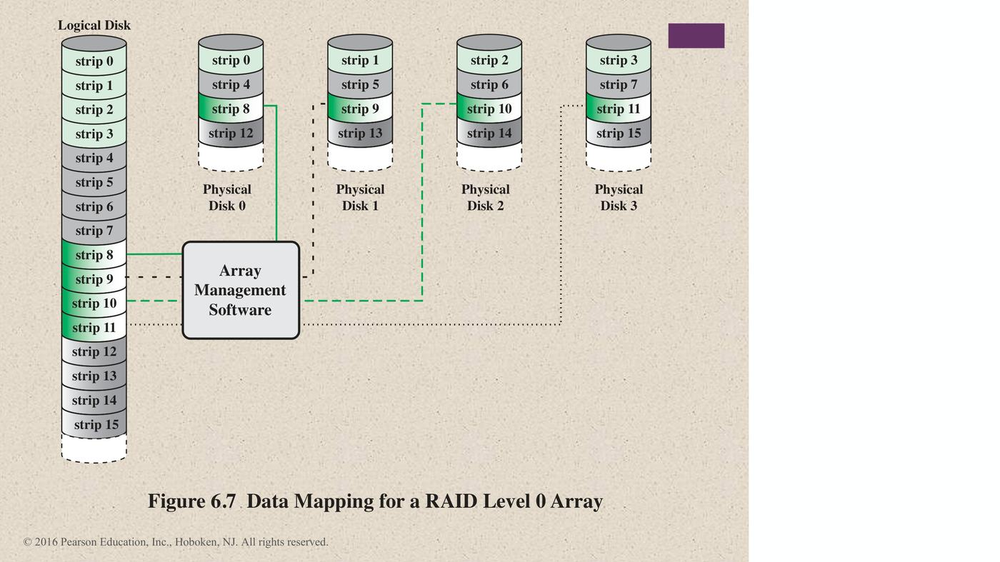
- Logical Disk มี strip 0–15 เรียงต่อกัน
- Array Management Software กระจาย strip ไปยัง Physical Disk 0–3 แบบวนรอบ
- Disk 0: strip 0, 4, 8, 12
- Disk 1: strip 1, 5, 9, 13
- Disk 2: strip 2, 6, 10, 14
- Disk 3: strip 3, 7, 11, 15
8.2 RAID Level 0
RAID 0 for High Data Transfer Capacity
- ถ้าจะให้แอปได้ transfer rate สูง ต้องมี 2 เงื่อนไข:
- ทุกช่วงทางระหว่าง host memory กับ disk แต่ละลูกต้องรองรับ transfer capacity สูง
- แอปต้องส่ง I/O request ในแบบที่ใช้ disk array ได้อย่างมีประสิทธิภาพ
RAID 0 for High I/O Request Rate
- เรื่องนี้ขึ้นกับ รูปแบบ request ของ host และ การวางข้อมูล
- ผลของ redundancy ไม่ได้เข้ามาเกี่ยวในการวิเคราะห์นี้
- request เล็ก ๆ แต่ละครั้ง ใช้เวลาไปกับ seek time และ rotational latency เป็นหลัก
- disk array ช่วยให้ทำ I/O ได้เร็ว เพราะ กระจายภาระ I/O ไปหลาย disk
- ถ้า strip ค่อนข้างใหญ่ request ที่รออยู่หลายตัวจะ ทำขนานกันได้ → ลดเวลารอคิว
8.3 RAID Level 1 — Mirroring (เขียนข้อมูลซ้ำ)
Characteristics
- สร้าง redundancy ต่างจาก RAID 2–6
- ใช้วิธีง่าย ๆ คือ ทำสำเนาข้อมูลทั้งหมด
- ยังใช้ data striping แต่ แต่ละ logical strip ถูกเขียนลง disk จริง 2 ลูก
- ทุก disk ใน array จึงมี mirror disk ที่เก็บข้อมูลเหมือนกัน
- ทำ RAID 1 โดยไม่ striping ก็ได้ แต่ไม่ค่อยนิยม
Positive Aspects
- read request ใช้ disk ลูกไหนก็ได้ จากสองลูกที่มีข้อมูล
- ไม่มี "write penalty" (ไม่ต้องคำนวณ parity)
- กู้คืนง่าย: disk ลูกหนึ่งเสียก็ อ่านจากอีกลูกได้เลย
- มีสำเนาข้อมูลทั้งหมดแบบ real-time
- รับ I/O request ได้เร็ว ถ้างานส่วนใหญ่เป็นการอ่าน
- ข้อเสียหลักคือราคาแพง
8.4 RAID Level 2
Characteristics
- ใช้ parallel access
- ใน parallel access array ทุก disk ต้องช่วยทำทุก I/O request
- spindle ของทุก drive หมุนพร้อมกัน (synchronized) หัวของแต่ละ disk จึงอยู่ตำแหน่งเดียวกันตลอด
- ใช้ data striping
- strip เล็กมาก บางครั้งเล็กแค่ 1 byte หรือ 1 word
Performance
- คำนวณ error-correcting code จากบิตที่ตรงกันของทุก data disk แล้วเก็บบิตของ code ไว้ใน parity disk หลายลูก
- มักใช้ Hamming code → แก้ single-bit error และตรวจจับ double-bit error ได้
- จำนวน redundant disk แปรตาม log ของจำนวน data disk
- คุ้มเฉพาะในสภาพแวดล้อมที่ disk error เกิดบ่อย
โน้ตภาษาไทยในสไลด์:
- ใช้ bit-level striping ร่วมกับ Hamming code (ECC) ที่เก็บแยกไว้ใน disk ต่างหาก
- ซับซ้อนที่สุด และแทบไม่มีใครใช้งานจริงในปัจจุบัน
8.5 RAID Level 3
Redundancy
- ใช้ redundant disk แค่ลูกเดียว ไม่ว่า array จะใหญ่แค่ไหน
- ใช้ parallel access และแบ่งข้อมูลเป็น strip เล็ก ๆ
- ไม่ใช้ ECC แต่คำนวณ parity bit ธรรมดา จากบิตตำแหน่งเดียวกันของทุก data disk
- ถ้า drive เสีย:
- ใช้ parity drive สร้างข้อมูลคืนจาก disk ที่เหลือ
- พอเปลี่ยน drive ใหม่แล้ว ก็กู้ข้อมูลลง drive ใหม่และทำงานต่อ
Performance
- ได้ data transfer rate สูงมาก
- ตอน disk เสีย ข้อมูลยังใช้ได้ครบ ในโหมดที่เรียกว่า reduced mode
- จะกลับมาทำงานเต็มรูปแบบได้ ต้อง เปลี่ยน disk และสร้างข้อมูลของ disk ที่เสียขึ้นมาใหม่ทั้งหมด
- ในงานแบบ transaction ประสิทธิภาพจะแย่
- ทุก request ต้องใช้ทุก disk จึงทำหลาย request พร้อมกันไม่ได้ (เสริม)
โน้ตในสไลด์: Byte-level striping + Parity ดิสก์เดียว
8.6 RAID Level 4
Characteristics
- ใช้ independent access
- disk แต่ละลูกทำงานอิสระ → I/O request หลายตัวทำขนานกันได้
- ใช้ data striping โดย strip ค่อนข้างใหญ่
Performance
- มี write penalty ตอนเขียน I/O ขนาดเล็ก
- เขียนแต่ละครั้ง array management software ต้องอัปเดตทั้ง ข้อมูลผู้ใช้ และ parity bits ที่เกี่ยวข้อง
- จะคำนวณ parity ใหม่ได้ ต้อง อ่าน user strip เดิม และ parity strip เดิม ก่อน
- การเขียน 1 strip จึงต้องใช้ 2 reads + 2 writes
โน้ตภาษาไทยในสไลด์:
- ใช้ block-level striping กับ parity disk แยกเฉพาะ 1 ตัว
- parity disk กลายเป็นคอขวด → RAID 5 จึงมาแก้ปัญหานี้
💡 สูตร parity ใหม่ (เสริมจากตำรา): P' = P ⊕ D_old ⊕ D_new จึงต้องอ่าน P และ D_old ก่อน (2 reads) แล้วเขียน D_new และ P' (2 writes)
8.7 RAID Level 5
Characteristics
- จัดวางคล้าย RAID 4
- ต่างกันตรงที่กระจาย parity strip ไปทุก disk
- มักใช้แบบ round-robin
- เมื่อกระจาย parity ไปทุก drive จึง เลี่ยงคอขวด I/O ของ RAID 4
โน้ตในสไลด์: Block-level striping + Parity หมุนเวียน
8.8 RAID Level 6
Characteristics
- คำนวณ parity 2 แบบ แล้วเก็บไว้คนละ block บน disk คนละลูก (P และ Q)
- ข้อดี: ข้อมูลพร้อมใช้งาน สูงมาก
- ข้อมูลจะหายก็ต่อเมื่อ disk เสีย 3 ลูกภายในช่วง MTTR (mean time to repair)
- ข้อเสีย: write penalty สูงมาก เพราะเขียนแต่ละครั้งกระทบ parity 2 block
โน้ตในสไลด์: เหมือน RAID 5 แต่ Parity 2 ชุด
9. Table 6.4 — RAID Comparison ⭐
| Level | Advantages | Disadvantages | Applications |
|---|---|---|---|
| 0 | I/O เร็วขึ้นมาก เพราะกระจายภาระไปหลาย channel และหลาย drive; ไม่มี overhead คำนวณ parity; ออกแบบง่ายมาก; ทำง่าย | drive เสียแค่ลูกเดียว ข้อมูลทั้ง array หายหมด | Video production and editing, Image editing, Pre-press applications, งานที่ต้องการ bandwidth สูง |
| 1 | redundancy 100% disk เสียก็ไม่ต้อง rebuild แค่คัดลอกลง disk ใหม่; บางกรณีรับ drive เสียพร้อมกันหลายลูกได้; ระบบ RAID ที่ออกแบบง่ายที่สุด | disk overhead สูงที่สุด (100%) — ไม่คุ้ม | Accounting, Payroll, Financial, งานที่ต้องการ availability สูงมาก |
| 2 | transfer rate สูงมากได้; ยิ่งต้องการ transfer rate สูง อัตรา data disk ต่อ ECC disk ยิ่งดี; controller ง่ายกว่า RAID 3, 4, 5 | อัตรา ECC disk ต่อ data disk สูงมาก เมื่อ word size เล็ก — ไม่คุ้ม; ต้นทุนเริ่มต้นสูงมาก ต้องมีความต้องการ transfer rate สูงมากจึงคุ้ม | ไม่มีการใช้เชิงพาณิชย์ / ไม่คุ้มในเชิงพาณิชย์ |
| 3 | อ่านเร็วมาก เขียนเร็วมาก; disk เสียแทบไม่กระทบ throughput; อัตรา parity disk ต่อ data disk ต่ำ จึงคุ้ม | transaction rate ดีที่สุดก็แค่เท่า disk เดี่ยว (ถ้า spindle synchronized); controller ค่อนข้างซับซ้อน | Video production and live streaming, Image editing, Video editing, Prepress applications, งานที่ต้องการ throughput สูง |
| 4 | read transaction rate สูงมาก; อัตรา parity disk ต่อ data disk ต่ำ จึงคุ้ม | controller ซับซ้อน; write transaction rate และ write aggregate transfer rate แย่ที่สุด; rebuild ยากและไม่คุ้มเมื่อ disk เสีย | ไม่มีการใช้เชิงพาณิชย์ / ไม่คุ้มในเชิงพาณิชย์ |
| 5 | read transaction rate สูงที่สุด; อัตรา parity disk ต่อ data disk ต่ำ; aggregate transfer rate ดี | controller ซับซ้อนที่สุด; rebuild ยากเมื่อ disk เสีย (เทียบกับ RAID 1) | File and application servers, Database servers, Web/e-mail/news servers, Intranet servers — RAID level ที่ใช้ได้หลากหลายที่สุด |
| 6 | ทนความผิดพลาดของข้อมูลได้สูงมาก และรับ drive เสียพร้อมกันหลายลูกได้ | controller ซับซ้อนกว่า; overhead ของ controller ในการคำนวณ parity สูงมาก | เหมาะที่สุดกับงาน mission critical |
10. SSD
10.1 SSD Compared to HDD
ข้อดีของ SSD เมื่อเทียบกับ HDD:
- IOPS สูง (input/output operations per second)
- ทนทาน (durability)
- อายุการใช้งานยาวกว่า
- กินไฟน้อยกว่า
- เงียบกว่า และเย็นกว่า
- access time และ latency ต่ำกว่า
10.2 Table 6.5 — Comparison of Solid State Drives and Disk Drives
| NAND Flash Drives | Seagate Laptop Internal HDD | |
|---|---|---|
| File copy/write speed | 200–550 Mbps | 50–120 Mbps |
| Power draw/battery life | กินไฟน้อยกว่า เฉลี่ย 2–3 watts แบตอยู่ได้นานขึ้น 30+ นาที | กินไฟมากกว่า เฉลี่ย 6–7 watts เปลืองแบตกว่า |
| Storage capacity | ขนาด notebook ปกติ ไม่เกิน 512 GB; desktop สูงสุด 1 TB | ขนาด notebook ประมาณ 500 GB สูงสุด 2 TB; desktop สูงสุด 4 TB |
| Cost | ประมาณ $0.50/GB (drive 1 TB) | ประมาณ $0.15/GB (drive 4 TB) |
10.3 Figure 6.8 — Solid State Drive Architecture
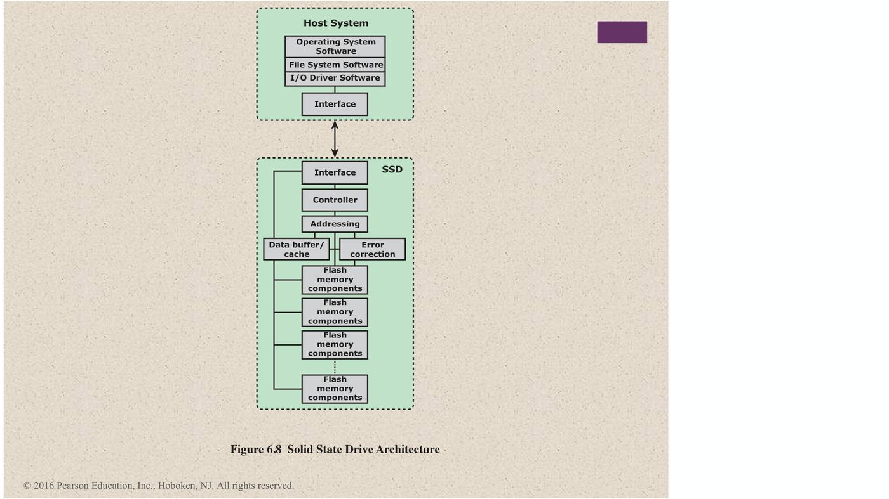
Host System
- Operating System Software
- File System Software
- I/O Driver Software
- Interface
SSD
- Interface
- Controller
- Addressing
- Data buffer/cache
- Error correction
- Flash memory components (หลายชุด)
10.4 Practical Issues ⭐
SSD มี ปัญหาในการใช้งานจริง 2 ข้อที่ HDD ไม่มี:
1) ประสิทธิภาพ SSD มักลดลงเมื่อใช้ไปนาน ๆ
- การแก้ข้อมูลต้องทำทั้ง block:
- อ่านทั้ง block จาก flash มาไว้ใน RAM buffer
- ก่อนเขียนกลับ ต้องลบ (erase) ทั้ง block ของ flash
- เขียนทั้ง block จาก buffer กลับลง flash
2) flash memory ใช้ไม่ได้หลังเขียนครบจำนวนครั้งหนึ่ง
- เทคนิคยืดอายุ:
- มี cache ข้างหน้า flash เพื่อ หน่วงและรวบการเขียน เป็นชุด
- wear-leveling algorithms กระจายการเขียนให้ ทั่วทุก block ของ cell
- bad-block management
- flash ส่วนใหญ่ประเมินอายุที่เหลือของตัวเองได้ ระบบจึง เตรียมรับมือก่อนเสีย ได้
💡 เหมือนแก้คำเดียวในหน้ากระดาษที่ห้ามใช้ยางลบ ต้องถ่ายเอกสารทั้งหน้า ฉีกหน้าเดิม แล้วเขียนหน้าใหม่ทั้งหน้า ทำบ่อย ๆ กระดาษ (cell) ก็เสื่อม (เสริม)
11. Optical Memory
11.1 Table 6.6 — Optical Disk Products ⭐
| ผลิตภัณฑ์ | คำอธิบาย |
|---|---|
| CD | Compact Disk — ลบไม่ได้ เก็บ เสียงดิจิทัล; แผ่น 12 cm เล่นต่อเนื่องได้ มากกว่า 60 นาที |
| CD-ROM | Compact Disk Read-Only Memory — ลบไม่ได้ เก็บ ข้อมูลคอมพิวเตอร์; แผ่น 12 cm จุ มากกว่า 650 MB |
| CD-R | CD Recordable — คล้าย CD-ROM แต่ ผู้ใช้เขียนได้ครั้งเดียว |
| CD-RW | CD Rewritable — ลบและเขียนใหม่ได้หลายครั้ง |
| DVD | Digital Versatile Disk — เก็บ วิดีโอแบบบีบอัด และข้อมูลดิจิทัลปริมาณมาก; มีขนาด 8 และ 12 cm; แบบสองหน้าจุ สูงสุด 17 GB; DVD พื้นฐานคือ อ่านอย่างเดียว (DVD-ROM) |
| DVD-R | DVD Recordable — เขียนได้ครั้งเดียว ใช้ได้เฉพาะแผ่นหน้าเดียว |
| DVD-RW | DVD Rewritable — ลบและเขียนใหม่ได้หลายครั้ง ใช้ได้เฉพาะแผ่นหน้าเดียว |
| Blu-Ray DVD | High definition video disk — ความหนาแน่นสูงกว่า DVD มาก ใช้ laser 405 nm (blue-violet); 1 ชั้น 1 หน้า จุ 25 GB |
11.2 Compact Disk Read-Only Memory (CD-ROM)
- audio CD กับ CD-ROM ใช้เทคโนโลยีคล้ายกัน
- ข้อต่างหลัก: เครื่องเล่น CD-ROM ทนทานกว่า และมี อุปกรณ์แก้ error เพื่อให้ข้อมูลถูกต้อง
- ขั้นตอนการผลิต:
- แผ่นทำจาก resin เช่น polycarbonate
- ข้อมูลดิจิทัลถูก ประทับเป็นหลุมเล็ก ๆ (pits) บนผิว polycarbonate
- ใช้ laser ความเข้มสูงที่โฟกัสละเอียด สร้าง master disk
- ใช้ master ทำแม่พิมพ์ (die) แล้ว ปั๊มสำเนา ลง polycarbonate
- เคลือบผิวที่มีหลุมด้วยชั้นสะท้อนแสง มักเป็น อะลูมิเนียมหรือทอง
- เคลือบ acrylic ใส ทับไว้กันฝุ่นและรอยขีดข่วน
- สุดท้าย silkscreen ฉลาก ลงบน acrylic
11.3 Figure 6.9 — CD Operation
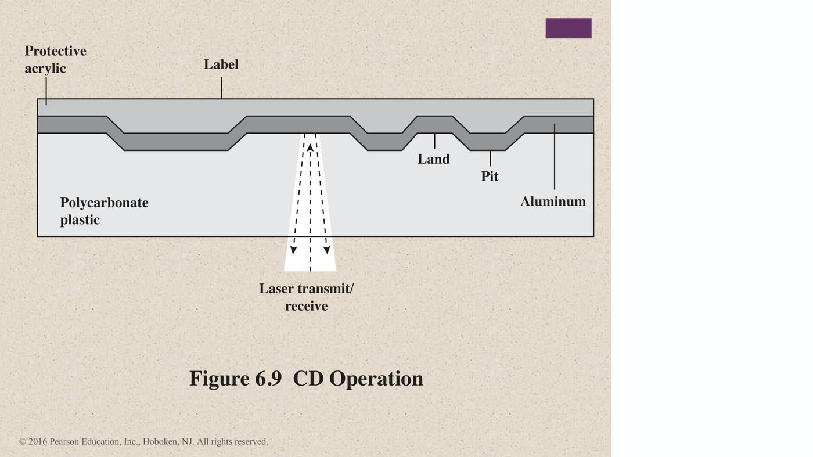
- ชั้นจากบนลงล่าง:
- Label
- Protective acrylic
- Aluminum
- Polycarbonate plastic
- Laser transmit/receive ยิงจากด้านล่าง แยก Pit กับ Land จากแสงที่สะท้อนกลับ
11.4 Figure 6.10 — CD-ROM Block Format
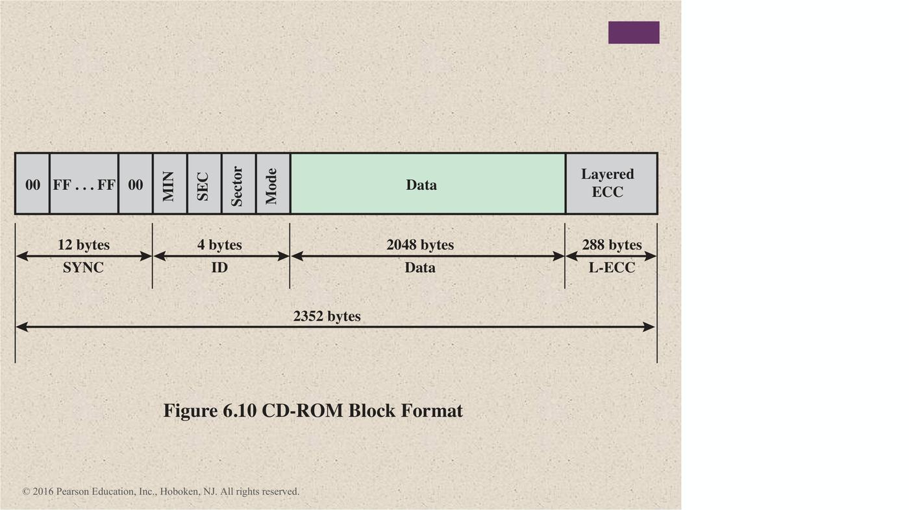
| ส่วน | ขนาด | รายละเอียด |
|---|---|---|
| SYNC | 12 bytes | 00, FF … FF, 00 |
| ID (header) | 4 bytes | MIN, SEC, Sector, Mode |
| Data | 2048 bytes | ข้อมูลผู้ใช้ |
| L-ECC (Layered ECC) | 288 bytes | แก้ error |
| รวม | 2352 bytes |
11.5 CD-ROM: ข้อดีและข้อเสีย
- เหมาะกับการแจกจ่ายข้อมูลปริมาณมากให้ผู้ใช้จำนวนมาก
- ไม่เหมาะกับงานเฉพาะบุคคล เพราะการเขียนครั้งแรกมีต้นทุนสูง
- ข้อดี 2 ข้อ:
- ผลิตแผ่นพร้อมข้อมูลจำนวนมากได้ถูก
- ถอดได้ (removable) ใช้เก็บข้อมูลระยะยาว (archival) ได้
- ข้อเสีย 2 ข้อ:
- อ่านได้อย่างเดียว อัปเดตไม่ได้
- access time นานกว่า magnetic disk drive มาก
11.6 CD Recordable (CD-R) และ CD Rewritable (CD-RW) ⭐
| CD-R | CD-RW | |
|---|---|---|
| หลักการ | Write-once read-many (WORM) | เขียนทับซ้ำได้หลายครั้ง |
| เหมาะกับ | งานที่ต้องการสำเนาข้อมูล 1 ชุดหรือไม่กี่ชุด | งานที่ต้องแก้ข้อมูล |
| กลไก | แผ่นถูกเตรียมให้ เขียนได้ครั้งเดียวด้วย laser ความเข้มปานกลาง; มี ชั้น dye (สีย้อม) ที่เปลี่ยนการสะท้อนแสงเมื่อโดน laser ความเข้มสูง | Phase change disk: วัสดุมี การสะท้อนแสงต่างกันมากใน 2 สถานะ และ laser เปลี่ยนสถานะไปมาได้ |
| จุดเด่น | บันทึกข้อมูลปริมาณมากแบบถาวร | เขียนใหม่ได้ |
| ข้อเสีย | เขียนได้ครั้งเดียว | วัสดุจะเสื่อมคุณสมบัติอย่างถาวรในที่สุด |
2 สถานะของ phase change:
- Amorphous state: โมเลกุล เรียงแบบสุ่ม → สะท้อนแสงได้ไม่ดี
- Crystalline state: ผิวเรียบ → สะท้อนแสงได้ดี
11.7 Figure 6.11 — CD-ROM and DVD-ROM
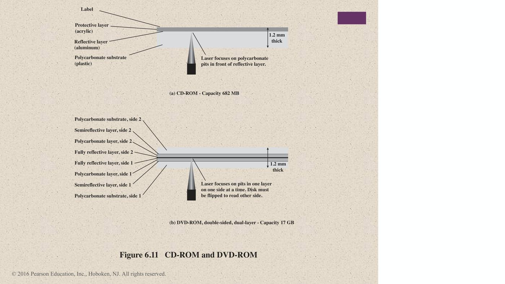
| (a) CD-ROM | (b) DVD-ROM double-sided, dual-layer | |
|---|---|---|
| Capacity | 682 MB | 17 GB |
| ความหนา | 1.2 mm | 1.2 mm |
| ชั้น | Label, Protective layer (acrylic), Reflective layer (aluminum), Polycarbonate substrate (plastic) | ต่อด้านมี Polycarbonate substrate, Semireflective layer, Polycarbonate layer, Fully reflective layer (side 1 และ side 2) |
| การอ่าน | laser โฟกัสที่หลุมใน polycarbonate หน้า reflective layer | laser โฟกัสที่หลุมทีละชั้น ทีละหน้า — ต้องกลับแผ่นเพื่ออ่านอีกหน้า |
11.8 Figure 6.12 — Optical Memory Characteristics ⭐
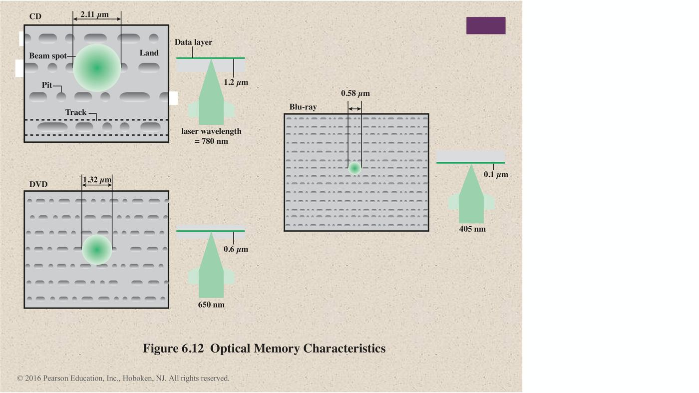
| CD | DVD | Blu-ray | |
|---|---|---|---|
| Laser wavelength | 780 nm | 650 nm | 405 nm |
| ขนาด beam spot | 2.11 µm | 1.32 µm | 0.58 µm |
| ระยะ data layer (ตามภาพ) | 1.2 µm | 0.6 µm | 0.1 µm |
💡 ความยาวคลื่นสั้นลง → beam spot เล็กลง → pit และ track ถี่ขึ้น → จุข้อมูลได้มากขึ้น
⚠️ ในภาพเขียนหน่วยของระยะ data layer เป็น µm (ความหนาจริงของชั้นป้องกันอยู่ในหลัก mm) (ข้อสังเกตเสริม)
12. Magnetic Tape
12.1 หลักการ
- อ่านเขียนด้วยเทคนิคเดียวกับ disk
- ตัวกลางคือเทป polyester ที่ยืดหยุ่น เคลือบด้วยวัสดุที่ทำให้เป็นแม่เหล็กได้
- สารเคลือบอาจเป็น อนุภาคโลหะบริสุทธิ์ใน binder พิเศษ หรือ ฟิล์มโลหะแบบ vapor-plated
- ข้อมูลเรียงเป็น track ขนานกันหลายเส้นตามความยาวเทป
- Serial recording: ข้อมูลเรียงเป็น ลำดับบิตตามแต่ละ track
- อ่านเขียนเป็นก้อนต่อเนื่อง เรียกว่า physical records
- ระหว่าง block มีช่องว่าง เรียกว่า inter-record gaps
12.2 Figure 6.13 — Typical Magnetic Tape Features
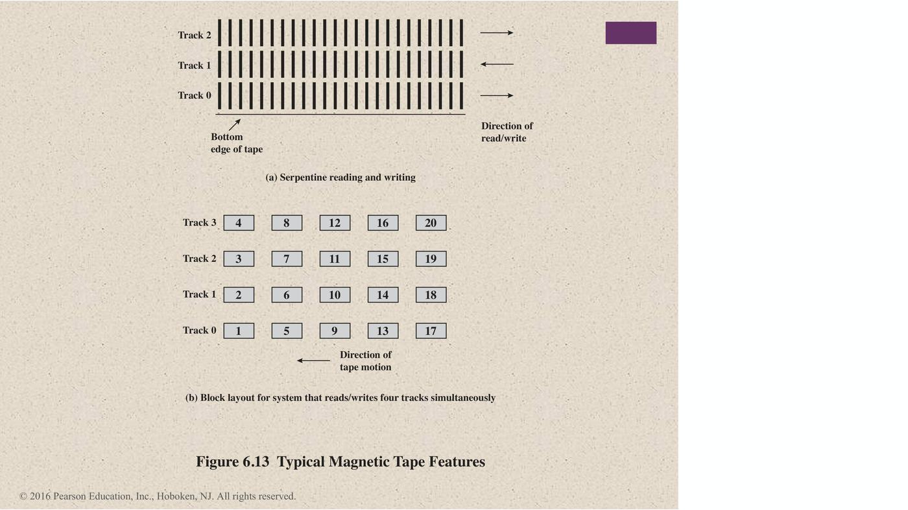
- (a) Serpentine reading and writing
- เขียน Track 0 ไปทางหนึ่ง
- พอสุดเทปก็ กลับทิศ เขียน Track 1
- แล้วต่อ Track 2 … วนไปมาแบบงู
- (b) Block layout สำหรับระบบที่อ่านเขียน 4 track พร้อมกัน
- block 1–4 อยู่คนละ track ในแนวเดียวกัน
- แล้วต่อด้วย block 5–8 และ 9–12 ไปเรื่อย ๆ
12.3 Table 6.7 — LTO Tape Drives
| LTO-1 | LTO-2 | LTO-3 | LTO-4 | LTO-5 | LTO-6 | LTO-7 | LTO-8 | |
|---|---|---|---|---|---|---|---|---|
| Release date | 2000 | 2003 | 2005 | 2007 | 2010 | TBA | TBA | TBA |
| Compressed capacity | 200 GB | 400 GB | 800 GB | 1600 GB | 3.2 TB | 8 TB | 16 TB | 32 TB |
| Compressed transfer rate | 40 MB/s | 80 MB/s | 160 MB/s | 240 MB/s | 280 MB/s | 525 MB/s | 788 MB/s | 1.18 GB/s |
| Linear density (bits/mm) | 4880 | 7398 | 9638 | 13250 | 15142 | |||
| Tape tracks | 384 | 512 | 704 | 896 | 1280 | |||
| Tape length | 609 m | 609 m | 680 m | 820 m | 846 m | |||
| Tape width (cm) | 1.27 | 1.27 | 1.27 | 1.27 | 1.27 | |||
| Write elements | 8 | 8 | 16 | 16 | 16 | |||
| WORM? | No | No | Yes | Yes | Yes | Yes | Yes | Yes |
| Encryption Capable? | No | No | No | Yes | Yes | Yes | Yes | Yes |
| Partitioning? | No | No | No | No | Yes | Yes | Yes | Yes |
💡 สังเกตแนวโน้ม:
- ความจุเพิ่มเท่าตัวแทบทุกรุ่น
- WORM เริ่มมีตั้งแต่ LTO-3
- Encryption เริ่มมีตั้งแต่ LTO-4
- Partitioning เริ่มมีตั้งแต่ LTO-5
13. Summary (Chapter 6 External Memory)
Magnetic disk
- Magnetic read and write mechanisms
- Data organization and formatting
- Physical characteristics
- Disk performance parameters
Solid state drives
- SSD compared to HDD
- SSD organization
- Practical issues
Magnetic tape
RAID
- RAID level 0 ถึง RAID level 6
Optical memory
- Compact disk
- Digital versatile disk
- High-definition optical disks
Q & A (สไลด์สุดท้าย)
14. คำศัพท์สำคัญ
| คำศัพท์ | ความหมาย | จำง่าย ๆ ว่า |
|---|---|---|
| Platter / Substrate | จาน / วัสดุฐานของจาน (อะลูมิเนียม, แก้ว) | |
| Inductive write head | หัวเขียนที่ใช้กระแสสร้างสนามแม่เหล็ก | |
| MR (magnetoresistive) sensor | หัวอ่านที่ความต้านทานเปลี่ยนตามทิศทางแม่เหล็ก | |
| Track / Sector / Cylinder | วงรอบ / ส่วนย่อยของ track / track เดียวกันทุกจาน | |
| Inter-track / Inter-sector gap | ช่องว่างกันสัญญาณรบกวน | |
| CAV | Constant angular velocity — sector ต่อ track เท่ากัน | |
| Multiple zone recording | zone ด้านนอกมี sector มากกว่า | จุมากกว่า |
| Fixed / Movable head | หัวต่อ track / หัวเดียวบนแขนเลื่อน | |
| Winchester head | aerodynamic foil ลอยด้วยแรงอากาศ ใน drive ปิดผนึก | ปีกเครื่องบิน |
| Seek time | เวลาเลื่อนหัวไปยัง track | |
| Rotational delay (latency) | เวลารอ sector หมุนมาถึง | ครึ่งรอบโดยเฉลี่ย |
| Access time | seek + rotational delay | ไม่รวม transfer |
| Transfer time | เวลาอ่านเขียนจริง | |
| RAID | Redundant Array of Independent Disks | |
| Striping | แบ่งข้อมูลกระจายหลาย disk | |
| Mirroring | ทำสำเนาข้อมูลลง 2 disk | RAID 1 |
| Parity | ค่าตรวจสอบสำหรับกู้ข้อมูล | |
| Parallel / Independent access | ทุก disk ช่วยทุก request (RAID 2, 3) / แยกกันทำ (RAID 4–6) | |
| Reduced mode | ทำงานต่อได้ขณะที่มี disk เสีย (RAID 3) | |
| Write penalty | ต้องอัปเดต parity ด้วย (2 reads + 2 writes) | |
| IOPS | Input/output operations per second | |
| Wear leveling | กระจายการเขียนทั่วทุก block | |
| Bad-block management | จัดการ block ที่เสีย | |
| Pit / Land | หลุม / พื้นเรียบบนแผ่น optical | |
| L-ECC | Layered ECC ใน CD-ROM (288 bytes) | |
| WORM | Write-once read-many | CD-R |
| Phase change (amorphous / crystalline) | สะท้อนแสงไม่ดี / ดี | CD-RW |
| Serial recording / Serpentine | เขียนเป็นลำดับบิต / กลับทิศทีละ track | tape |
| Physical record / Inter-record gap | block บนเทป / ช่องว่างระหว่าง block | |
| LTO | Linear Tape-Open |
15. สรุปท้ายบท / จุดที่มักออกสอบ
เรื่องที่ต้องจำ
- Glass substrate มีข้อดี 5 ข้อ: ผิวสม่ำเสมอ, ตำหนิน้อย, fly height ต่ำลง, แข็งแรง, ทนแรงกระแทก
- การอ่านเขียน: ทิศทางแม่เหล็กแทน 0/1; หัวเขียนแบบ inductive และหัวอ่านแบบ MR
- Disk layout: track, sector, cylinder, gap
- CAV vs multiple zone recording
- ST506: 600 bytes/sector, data 512 bytes, 30 sectors ต่อ track
- Table 6.1 มี 5 หัวข้อ: head motion, portability, sides, platters, head mechanism (contact, fixed gap, aerodynamic gap)
- หัวแคบ → ต้องอยู่ใกล้จาน → density สูงขึ้น แต่เสี่ยง error มากขึ้น; Winchester head
- Access time = seek + rotational delay; ลำดับ wait for device → wait for channel → seek → rotational delay → transfer
- RAID มีลักษณะร่วม 3 ข้อ และ ตาราง RAID levels:
| Level | จุดเด่น | จำนวน disk |
|---|---|---|
| 0 | striping ล้วน ไม่มี redundancy | N |
| 1 | mirror | 2N |
| 2 | Hamming code, bit-level | N + m |
| 3 | parity disk เดียว, parallel | N + 1 |
| 4 | block parity disk เดียว (คอขวด) | N + 1 |
| 5 | parity หมุนเวียน | N + 1 |
| 6 | P + Q (dual parity) | N + 2 |
- RAID 1: อ่านจากลูกไหนก็ได้, ไม่มี write penalty, ข้อเสียคือแพง
- RAID 3: reduced mode, งาน transaction แย่
- RAID 4: write penalty = 2 reads + 2 writes; parity disk เป็นคอขวด → แก้ด้วย RAID 5
- RAID 6: ข้อมูลหายเมื่อ 3 disk เสียภายใน MTTR; write penalty สูง
- Table 6.4 applications:
- RAID 0: video/image editing
- RAID 1: accounting, payroll, financial
- RAID 2, 4: ไม่มีใช้เชิงพาณิชย์
- RAID 5: server ทั่วไป (most versatile)
- RAID 6: mission critical
- ข้อดี SSD 6 ข้อ และ Table 6.5:
- SSD: 200–550 Mbps, 2–3 W, $0.50/GB
- HDD: 50–120 Mbps, 6–7 W, $0.15/GB
- SSD practical issues:
- ช้าลงเมื่อใช้ไปนาน (read block → erase → write block)
- อายุจำกัด (แก้ด้วย cache, wear leveling, bad-block management)
- Optical:
- CD > 60 นาที; CD-ROM > 650 MB (ในภาพ 682 MB)
- DVD สองหน้าจุ 17 GB; Blu-ray 1 ชั้นจุ 25 GB ด้วย laser 405 nm
- DVD-R/RW ใช้ได้เฉพาะแผ่นหน้าเดียว
- CD-ROM:
- ขั้นตอนการผลิต
- block 2352 bytes (sync 12, ID 4, data 2048, L-ECC 288)
- ข้อดี: ผลิตซ้ำถูก, ถอดได้
- ข้อเสีย: อ่านอย่างเดียว, access ช้า
- CD-R ใช้ dye layer (WORM); CD-RW ใช้ phase change (amorphous สะท้อนแสงไม่ดี, crystalline สะท้อนแสงดี)
- Laser: CD 780 nm, DVD 650 nm, Blu-ray 405 nm
- Tape: polyester, parallel tracks, serial recording, physical records, inter-record gaps, serpentine
- LTO: WORM ตั้งแต่ LTO-3, encryption ตั้งแต่ LTO-4, partitioning ตั้งแต่ LTO-5
คู่ที่มักสับสน
| คู่ | ต่างกันที่ |
|---|---|
| Access time vs Transfer time | seek + rotational vs ช่วงอ่านเขียนจริง |
| CAV vs Multiple zone | sector ต่อ track เท่ากัน vs zone นอกมี sector มากกว่า |
| Fixed-head vs Movable-head | หัวต่อ track vs หัวเดียวเลื่อนได้ |
| RAID 0 vs RAID 1 | striping ไม่มีสำรอง vs mirror |
| RAID 2 vs RAID 3 | Hamming code หลาย disk vs parity disk เดียว |
| RAID 3 vs RAID 4 | parallel access strip เล็ก vs independent access strip ใหญ่ |
| RAID 4 vs RAID 5 | parity disk เดียว (คอขวด) vs parity กระจาย |
| RAID 5 vs RAID 6 | parity 1 ชุด (N+1) vs 2 ชุด (N+2) |
| CD-R vs CD-RW | dye เขียนครั้งเดียว vs phase change เขียนซ้ำได้ |
| Amorphous vs Crystalline | สะท้อนแสงไม่ดี vs สะท้อนแสงดี |